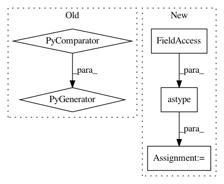

08884e278540cc3b3cbe780f6695bc8cbb4c05b6,osmnx/utils_graph.py,,add_edge_lengths,#Any#Any#,146
Before Change
// extract the edges" endpoint nodes" coordinates
try:
coords = (
(u, v, k, G.nodes[u]["y"], G.nodes[u]["x"], G.nodes[v]["y"], G.nodes[v]["x"])
for u, v, k in G.edges
)
except KeyError: // pragma: no cover
missing_nodes = {
str(i)
for u, v, _ in G.edges(keys=True)
After Change
raise KeyError(f"Edge(s) missing nodes {missing_str} possibly due to clipping issue")
df_coords = pd.DataFrame(coords, columns=["u", "v", "k", "u_y", "u_x", "v_y", "v_x"])
df_coords[["u", "v", "k"]] = df_coords[["u", "v", "k"]].astype(np.int64)
df_coords = df_coords.set_index(["u", "v", "k"])
// then calculate the great circle distance with the vectorized function
gc_distances = distance.great_circle_vec(
In pattern: SUPERPATTERN
Frequency: 4
Non-data size: 5
Instances
Project Name: gboeing/osmnx
Commit Name: 08884e278540cc3b3cbe780f6695bc8cbb4c05b6
Time: 2020-12-02
Author: boeing@usc.edu
File Name: osmnx/utils_graph.py
Class Name:
Method Name: add_edge_lengths
Project Name: gboeing/osmnx
Commit Name: 4e2a294ef733417631dbb90f586127a24a043a30
Time: 2020-11-19
Author: boeing@usc.edu
File Name: osmnx/utils_graph.py
Class Name:
Method Name: add_edge_lengths
Project Name: AlexEMG/DeepLabCut
Commit Name: ba5463e74515841e6c6307a08e2ecb3c58fb8cda
Time: 2018-05-08
Author: amathis@fas.harvard.edu
File Name: Evaluation-Tools/MakingLabeledVideo.py
Class Name:
Method Name:
Project Name: nilearn/nilearn
Commit Name: 16539bf83ec9b06540bd314e8f438bb31aad70fa
Time: 2014-10-13
Author: danilobzdok@gmail.com
File Name: plot_roi_extraction.py
Class Name:
Method Name: